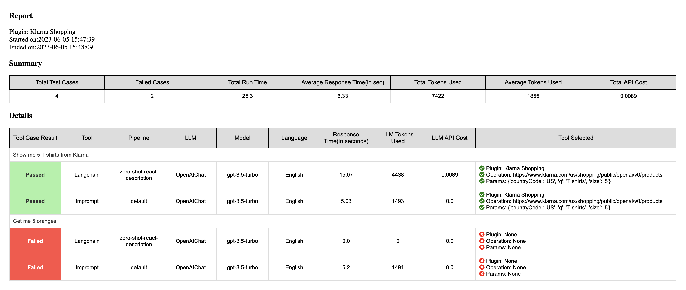

Quickstart#
To install using pip, run:
pip install permutate
You can verify you have permutate installed by running:
permutate --help
Setup environment variables#
Before you run the application, be sure you have credentials configured.
export OPENAI_API_KEY=<your key> // if you want to use OpenAI LLM
export COHERE_API_KEY=<your key> // if you wan to use Cohere LLM
export GOOGLE_APPLICATION_CREDENTIALS=<credential_file_path: /usr/app/application_default_credentials.json> // if you want to use Google LLM
Start permutate http server#
python start_api_server.py
or with poetry
poetry run python start_api_server.py
Using permutate as a library to run tests#
Usage: permutation run [TEST_FILE_PATH] [OPTIONS]
Run a permutation batch
Arguments:
test_file_path Plugin test setup file.
default: /permutate/workspace/plugin_test.yaml
Options:
--help show this help message and exit
--save-to-html --no-save-to-html Save the results of the permutation run to an html file.
default: save-to-html
--save-to-csv --no-save-to-csv Save the results of the permutation run to a csv file.
default: no-save-to-csv
--output-directory Path to the directory where the output files will be saved.
default: /permutate/workspace/output/
Examples#
This command will run the tests defined in the plugin_test.yaml file and save the results to a csv file and an html file in the directory pointed by the flag –output-directory.
permutate run tests/files/plugin_test.yaml --output-directory tests/files/output/ --save-to-csv --save-to-html
This command will run the tests on a sample test file provided in the package and save the results to an html file. This command can be used to see the sample output.
permutate run
Docker#
docker run -v /LOCALPATH/plugin_test.yaml:/usr/app/plugin_test.yaml -e "OPENAI_KEY=your-key" -e "COHERE_API_KEY=your-key" -e "GOOGLE_APPLICATION_CREDENTIALS=your-file-path" shrikant14/permutate:latest
Result from permutate run command#
You can save your permutate run output to:
1. HTML Report:#
You can save your permutation run output to an HTML Report that presents the results of the permutation run in a structured and visually appealing format.
2. CSV Report.#
You can save your permutation run output to two csv files: one for the permutation run summary and one for the permutation run details.